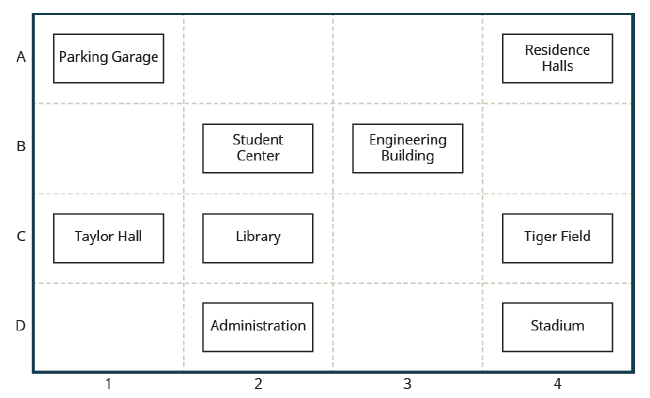

Chapter 4: Graphs
Section 5.1: Rectangular Coordinate System
An old story describes how seventeenth-century philosopher/mathematician René Descartes invented the system that has become the foundation of algebra while sick in bed. According to the story, Descartes was staring at a fly crawling on the ceiling when he realized that he could describe the fly's location in relation to the perpendicular lines formed by the adjacent walls of his room. He viewed the perpendicular lines as horizontal and vertical axes. Further, by dividing each axis into equal unit lengths, Descartes saw that it was possible to locate any object in a two-dimensional plane using just two numbers: the displacement from the horizontal axis and the displacement from the vertical axis.
While there is evidence that ideas similar to Descartes' grid system existed centuries earlier, it was Descartes who introduced the components that comprise the Cartesian coordinate system, a grid system having perpendicular axes. Descartes named the horizontal axis the x-axis and the vertical axis the y-axis. The Cartesian System, also called the rectangular coordinate system, is based on a two-dimensional plane consisting of the x-axis and the y-axis. Perpendicular to each other, the axes divide the plane into four sections. Each section is called a quadrant; the quadrants are numbered counterclockwise as shown in Figure 2.1.
The center where the axes cross is the origin $(0, 0)$. Positive numbers increase to the right on the x-axis and up the y-axis; negatives go left and down. Each point is given as an ordered pair $(x, y)$.
Plotting a Point
Many maps, use a grid system to identify locations. In the map below you will see the numbers 1,2,3,and 4 across the bottom, and letters A,B,C, and D along the sides. Every location on the map can be identified by a number and a letter.
For example, the student center is in section 2B. It is located in the grid section above the number 2 and next to the letter B.

Example 1
- Find the grid section for the Residence Halls
- What is located in section 4C?
Solution
- The Residence Halls are located in the upper right corner, which would be column 4, and row A. This means our solution is 4A
- To locate what is in space 4C, we would proceed left to the fourth column, and then up to row C, which is Tiger Field.
We can make this same extension to the Rectangular Coordinate System. Each point in the plane is identified by its x-coordinate, or horizontal displacement from the origin, and its y-coordinate, or vertical displacement from the origin. Together, we write them as an ordered pair, indicating the combined distance from the origin in the form $(x,y)$. An ordered pair is also known as a coordinate pair because it consists of x- and y-coordinates. For example, we can represent the point $(3,-4)$ in the plane by moving three units to the right of the origin in the horizontal direction, then four units down in the vertical direction. See Figure 2.2:
When dividing the axes into equally spaced increments, note that the x-axis may be considered separate from the y-axis. In other words, while the x-axis may be divided and labeled according to consecutive integers, the y-axis may be divided and labeled by increments of 2, 10, or even 100. In fact, the axes may represent other units, such as years against the balance in a savings account, or quantity against cost, and so on. Consider the rectangular coordinate system primarily as a method for showing the relationship between two quantities.
Cartesian Coordinate System
A two-dimensional place where the:
- x-axis is the horizontal axis
- y-axis is the vertical axis
A point in the plane is defined as an ordered pair, $(x,y)$, such that $x$ is the horizontal distance from the origin and $y$ is the vertical distance from the origin.
Example 2
Plot the points $(-2,4)$, $(3,3)$, and $(0,-3)$ in the plane, and identify the quadrant or axis each point lies on.
Solution
- To plot the point $(-2,4)$, begin at the origin. Move $-2$ places horizontally (left) along the x-axis, then move $4$ places vertically (up). Identified by the orange on the graph.
- To plot the point $(3,3)$, begin at the origin. Move $3$ places horizontally (right) along the x-axis, then move $3$ places vertically (up). Identified by the blue on the graph.
- To plot the point $(0,-3)$, begin at the origin. Move $0$ places horizontally along the x-axis, then move $-3$ places vertically (down). Identified by the red on the graph.
- From the graph, we can identify that the point $(-2,4)$ is in quadrant II.
- From the graph, we can identify that the point $(3,3)$ is in quadrant I.
- From the graph, we can identify that the point $(0,-3)$ is on the negative y-axis.
Verifying Solution to an Equation in Two Variables
All the equations we solved so far have been equations with one variable. In almost every case, when we solved the equation we got exactly one solution. The process of solving an equation ended with a statement such as \(x = 4\). Then we checked the solution by substituting back into the equation. Here’s an example of a linear equation in one variable, and its one solution.
\[3x+5=17\] \[3x=2\] \[x=4\]But what if the equation was \(3x+2y=4\), how would one go about finding those solutions? That example would have two solutions. It is also called a Linear Equation
Definition - Linear Equation
An equation of the form \(Ax+By=C\), where A and B are both non-zero numbers, is called a linear equation in two variables.Notice the work "line" is in linear. Graphically, a linear equation creates a straight line.
Is \(y=-5x+1\) a linear equation? At first glance it doesn't meet the criteria we just dicussed. However, if we used some basic algebra that we learned in the previous section we can re-arrange this equation such that it is.
\[y=-5x+1\] \[5x+y=1\]We can now see that it is in fact a linear equation in two variables because it can be written in the standard form of \(Ax+By=C\)
Linear equations in two variables have a pair of solutions known as a coordinate pair. For every \(x\) that can be substitued in, exists a \(y\) that will come back out. These two numbers together create the solution of a linear equation.
Definition - Solutions to Linear Equations
An ordered pair \((x,y)\) is a solution to the linear equation \(Ax+By=C\), if the equation is a true statement when the two values are substituted in for their respected variables in the equation.Example 3
Determine which ordered pairs are solutions of the equation \(x+4y=8\)
- \((0,2)\)
- \((2,-4)\)
- \((-4,3)\)
Solution
Substitute the \(x\)- and \(y\)-values from each ordered pair into the equation and determine if it results in a true statement.
(a) \((0, 2)\)
\(x = 0,\ y = 2\)
\(x + 4y = 8\)
\[0 + 4(2) \stackrel{?}{=} 8\] \[0 + 8 \stackrel{?}{=} 8\] \[8 = 8\ ✓\]\((0, 2)\) is a solution.
(b) \((2, -4)\)
\(x = 2,\ y = -4\)
\(x + 4y = 8\)
\[2 + 4(-4) \stackrel{?}{=} 8\] \[2 + (-16) \stackrel{?}{=} 8\] \[-14 \neq 8\]\((2, -4)\) is not a solution.
(c) \((-4, 3)\)
\(x = -4,\ y = 3\)
\(x + 4y = 8\)
\[-4 + 4(3) \stackrel{?}{=} 8\] \[-4 + 12 \stackrel{?}{=} 8\] \[8 = 8\ ✓\]\((-4, 3)\) is a solution.
Self Check A
Determine which ordered pairs are solutions of the equation \(y = 4x - 3\).
- \((0, 3)\)
- \((1, 1)\)
- \((1, 1)\)
(a) \((0, 3)\)
\(x = 0,\ y = 3\)
\(y = 4x - 3\)
\[3 \stackrel{?}{=} 4(0) - 3\] \[3 \stackrel{?}{=} 0 - 3\] \[3 \neq -3\]\((0, 3)\) is not a solution.
(b) \((1, 1)\)
\(x = 1,\ y = 1\)
\(y = 4x - 3\)
\[1 \stackrel{?}{=} 4(1) - 3\] \[1 \stackrel{?}{=} 4 - 3\] \[1 = 1\ ✓\]\((1, 1)\) is a solution.
(c) \((1, 1)\)
\(x = 1,\ y = 1\)
\(y = 4x - 3\)
\[1 \stackrel{?}{=} 4(1) - 3\] \[1 \stackrel{?}{=} 4 - 3\] \[1 = 1\ ✓\]\((1, 1)\) is a solution.
Self Check B
Determine which ordered pairs are solutions of the equation \(y = -2x + 6\).
- \((0, 6)\)
- \((1, 4)\)
- \((-2, -2)\)
(a) \((0, 6)\)
\(x = 0,\ y = 6\)
\(y = -2x + 6\)
\[6 \stackrel{?}{=} -2(0) + 6\] \[6 \stackrel{?}{=} 0 + 6\] \[6 = 6\ ✓\]\((0, 6)\) is a solution.
(b) \((1, 4)\)
\(x = 1,\ y = 4\)
\(y = -2x + 6\)
\[4 \stackrel{?}{=} -2(1) + 6\] \[4 \stackrel{?}{=} -2 + 6\] \[4 = 4\ ✓\]\((1, 4)\) is a solution.
(c) \((-2, -2)\)
\(x = -2,\ y = -2\)
\(y = -2x + 6\)
\[-2 \stackrel{?}{=} -2(-2) + 6\] \[-2 \stackrel{?}{=} 4 + 6\] \[-2 \neq 10\]\((-2, -2)\) is not a solution.